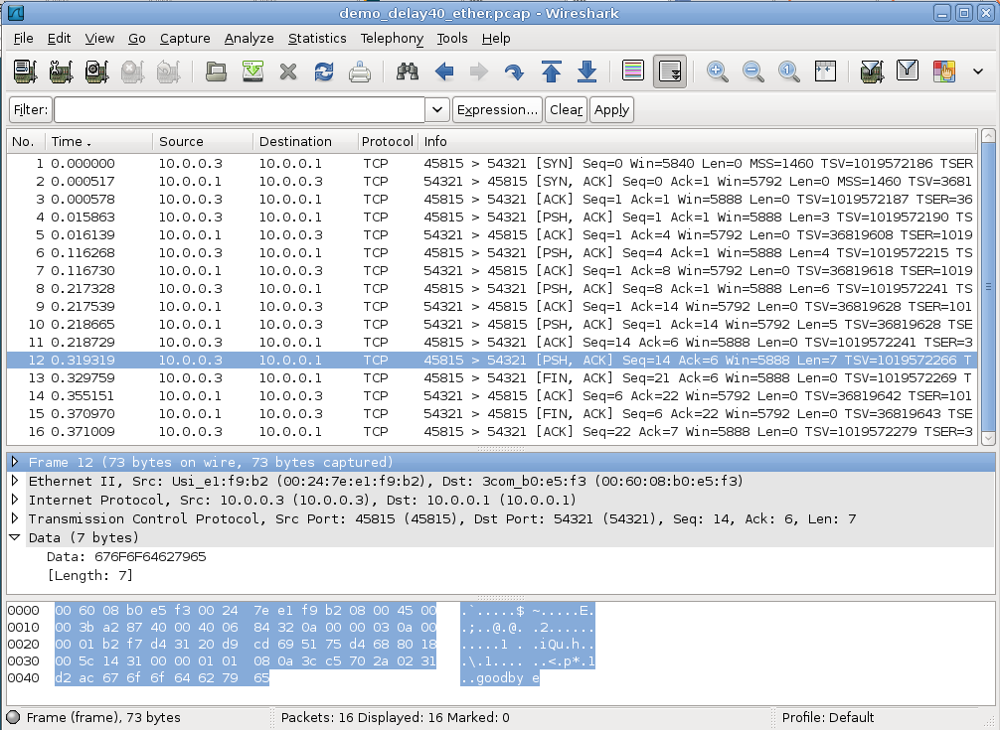
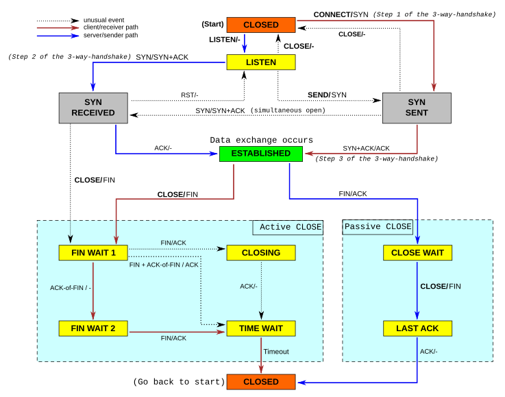
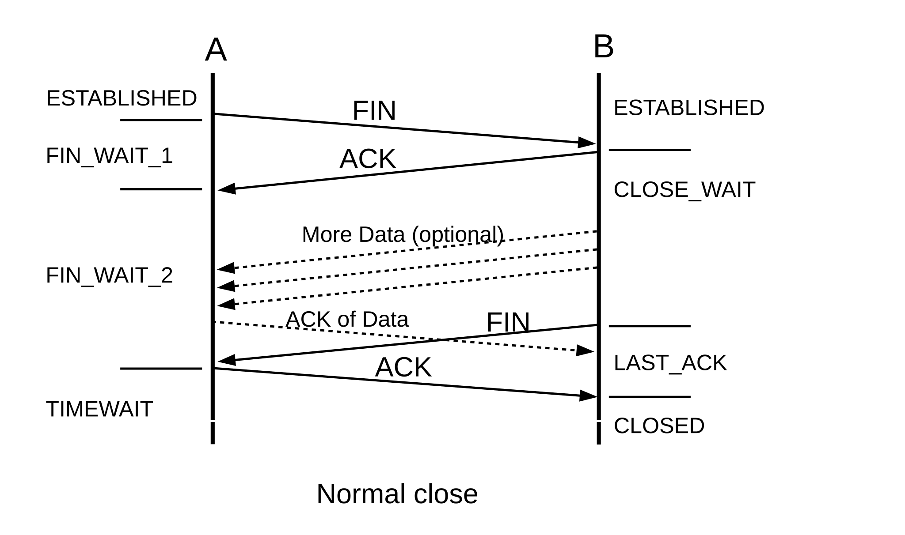

17 TCP Transport Basics¶
The standard transport protocols riding above the IP layer are TCP and UDP. As we saw in 16 UDP Transport, UDP provides simple datagram delivery to remote sockets, that is, to ⟨host,port⟩ pairs. TCP provides a much richer functionality for sending data to (connected) sockets. In this chapter we cover the basic TCP protocol; in the following chapter we cover some subtle issues related to potential data loss, some TCP implementation details, and then some protocols that serve as alternatives to TCP.
TCP is quite different in several dimensions from UDP. TCP is stream-oriented, meaning that the application can write data in very small or very large amounts and the TCP layer will take care of appropriate packetization (and also that TCP transmits a stream of bytes, not messages or records; cf 18.15.2 SCTP). TCP is connection-oriented, meaning that a connection must be established before the beginning of any data transfer. TCP is reliable, in that TCP uses sequence numbers to ensure the correct order of delivery and a timeout/retransmission mechanism to make sure no data is lost short of massive network failure. Finally, TCP automatically uses the sliding windows algorithm to achieve throughput relatively close to the maximum available.
These features mean that TCP is very well suited for the transfer of large files. The two endpoints open a connection, the file data is written by one end into the connection and read by the other end, and the features above ensure that the file will be received correctly. TCP also works quite well for interactive applications where each side is sending and receiving streams of small packets. Examples of this include ssh or telnet, where packets are exchanged on each keystroke, and database connections that may carry many queries per second. TCP even works reasonably well for request/reply protocols, where one side sends a single message, the other side responds, and the connection is closed. The drawback here, however, is the overhead of setting up a new connection for each request; a better application-protocol design might be to allow multiple request/reply pairs over a single TCP connection.
Note that the connection-orientation and reliability of TCP represent abstract features built on top of the IP layer, which supports neither of them.
The connection-oriented nature of TCP warrants further explanation. With UDP, if a server opens a socket (the OS object, with corresponding socket address), then any client on the Internet can send to that socket, via its socket address. Any UDP application, therefore, must be prepared to check the source address of each packet that arrives. With TCP, all data arriving at a connected socket must come from the other endpoint of the connection. When a server S initially opens a socket s, that socket is “unconnected”; it is said to be in the LISTEN state. While it still has a socket address consisting of its host and port, a LISTENing socket will never receive data directly. If a client C somewhere on the Internet wishes to send data to s, it must first establish a connection, which will be defined by the socketpair consisting of the socket addresses (that is, the ⟨IP_addr,port⟩ pairs) at both C and S. As part of this connection process, a new connected child socket sC will be created; it is sC that will receive any data sent from C. Usually, the server will also create a new thread or process to handle communication with sC. Typically the server will have multiple connected children of the original socket s, and, for each one, a process attached to it.
If C1 and C2 both connect to s, two connected sockets at S will be created, s1 and s2, and likely two separate processes. When a packet arrives at S addressed to the socket address of s, the source socket address will also be examined to determine whether the data is part of the C1–S or the C2–S connection, and thus whether a read on s1 or on s2, respectively, will see the data.
If S is acting as an ssh server, the LISTENing socket listens on port 22, and the connected child sockets correspond to the separate user login connections; the process on each child socket represents the login process of that user, and may run for hours or days.
In Chapter 1 we likened TCP sockets to telephone connections, with the server like one high-volume phone number 800-BUY-NOWW. The unconnected socket corresponds to the number everyone dials; the connected sockets correspond to the actual calls. (This analogy breaks down, however, if one looks closely at the way such multi-operator phone lines are actually configured: each typically does have its own number.)
TCP was originally defined in RFC 793, with important updates in RFC 1122, dated October 1989. Since then there have been many miscellaneous updates; all of these have now been incorporated into a single specification RFC 9293.
17.1 The End-to-End Principle¶
The End-to-End Principle is spelled out in [SRC84]; it states in effect that transport issues are the responsibility of the endpoints in question and thus should not be delegated to the core network. This idea has been very influential in TCP design.
Two issues falling under this category are data corruption and congestion. For the first, even though essentially all links on the Internet have link-layer checksums to protect against data corruption, TCP still adds its own checksum (in part because of a history of data errors introduced within routers). For the latter, TCP is today essentially the only layer that addresses congestion management.
Saltzer, Reed and Clark categorized functions that were subject to the End-to-End principle this way:
The function in question can completely and correctly be implemented only with the knowledge and help of the application standing at the end points of the communication system. Therefore, providing that questioned function as a feature of the communication system itself is not possible. (Sometimes an incomplete version of the function provided by the communication system may be useful as a performance enhancement.)
This does not mean that the backbone Internet should not concern itself with congestion; it means that backbone congestion-management mechanisms should not completely replace end-to-end congestion management.
17.2 TCP Header¶
Below is a diagram of the TCP header. As with UDP, source and destination ports are 16 bits. The 4-bit Data Offset field specifies the number of 32-bit words in the header; if no options are present its value is 5.
As with UDP, the checksum covers the TCP header, the TCP data and an IP “pseudo header” that includes the source and destination IP addresses. The checksum must be updated by a NAT router that modifies any header values. (Although the IP and TCP layers are theoretically separate, and RFC 793 in some places appears to suggest that TCP can be run over a non-IP internetwork layer, RFC 793 also explicitly defines 4-byte addresses for the pseudo header. RFC 2460 officially redefined the pseudo header to allow IPv6 addresses.)
The sequence and acknowledgment numbers are for numbering the data, at the byte level. This allows TCP to send 1024-byte blocks of data, incrementing the sequence number by 1024 between successive packets, or to send 1-byte telnet packets, incrementing the sequence number by 1 each time. There is no distinction between DATA and ACK packets; all packets carrying data from A to B also carry the most current acknowledgment of data sent from B to A. Many TCP applications are largely unidirectional, in which case the sender would include essentially the same acknowledgment number in each packet while the receiver would include essentially the same sequence number.
It is traditional to refer to the data portion of TCP packets as segments.
The value of the sequence number, in relative terms, is the position of the first byte of the packet in the data stream, or the position of what would be the first byte in the case that no data was sent. The value of the acknowledgment number, again in relative terms, represents the byte position for the next byte expected. Thus, if a packet contains 1024 bytes of data and the first byte is number 1, then that would be the sequence number. The data bytes would be positions 1-1024, and the ACK returned would have acknowledgment number 1025.
The sequence and acknowledgment numbers, as sent, represent these relative values plus an Initial Sequence Number, or ISN, that is fixed for the lifetime of the connection. Each direction of a connection has its own ISN; see below.
TCP acknowledgments are cumulative: when an endpoint sends a packet with an acknowledgment number of N, it is acknowledging receipt of all data bytes numbered less than N. Standard TCP provides no mechanism for acknowledging receipt of packets 1, 2, 3 and 5; the highest cumulative acknowledgment that could be sent in that situation would be to acknowledge packet 3.
The TCP header defines some important flag bits; the brief definitions here are expanded upon in the sequel:
- SYN: for SYNchronize; marks packets that are part of the new-connection handshake
- ACK: indicates that the header Acknowledgment field is valid; that is, all but the first packet
- FIN: for FINish; marks packets involved in the connection closing
- PSH: for PuSH; marks “non-full” packets that should be delivered promptly at the far end
- RST: for ReSeT; indicates various error conditions
- URG: for URGent; part of a now-seldom-used mechanism for high-priority data
- CWR and ECE: part of the Explicit Congestion Notification mechanism, 21.5.3 Explicit Congestion Notification (ECN)
17.3 TCP Connection Establishment¶
TCP connections are established via an exchange known as the three-way handshake. If A is the client and B is the LISTENing server, then the handshake proceeds as follows:
- A sends B a packet with the SYN bit set (a SYN packet)
- B responds with a SYN packet of its own; the ACK bit is now also set
- A responds to B’s SYN with its own ACK
Normally, the three-way handshake is triggered by an application’s request to connect; data can be sent only after the handshake completes. This means a one-RTT delay before any data can be sent. The original TCP standard RFC 793 does allow data to be sent with the first SYN packet, as part of the handshake, but such data cannot be released to the remote-endpoint application until the handshake completes. Most traditional TCP programming interfaces offer no support for this early-data option.
There are recurrent calls for TCP to support data transmission within the handshake itself, so as to achieve request/reply turnaround comparable to that with RPC (16.5 Remote Procedure Call (RPC)). We return to this in 18.5 TCP Faster Opening.
The three-way handshake is vulnerable to an attack known as SYN flooding. The attacker sends a large number of SYN packets to a server B. For each arriving SYN, B must allocate resources to keep track of what appears to be a legitimate connection request; with enough requests, B’s resources may face exhaustion. SYN flooding is easiest if the SYN packets are simply spoofed, with forged, untraceable source-IP addresses; see spoofing at 9.1 The IPv4 Header, and 18.3.1 ISNs and spoofing below. SYN-flood attacks can also take the form of a large number of real connection attempts from a large number of real clients – often compromised and pressed into service by some earlier attack – but this requires considerably more resources on the part of the attacker. See 18.15.2 SCTP for an alternative handshake protocol (unfortunately not available to TCP) intended to mitigate SYN-flood attacks, at least from spoofed SYNs.
To close the connection, a superficially similar exchange involving FIN packets may occur:
- A sends B a packet with the FIN bit set (a FIN packet), announcing that it has finished sending data
- B sends A an ACK of the FIN
- B may continue to send additional data to A
- When B is also ready to cease sending, it sends its own FIN to A
- A sends B an ACK of the FIN; this is the final packet in the exchange
Here’s the ladder diagram for this:
The FIN handshake is really more like two separate two-way FIN/ACK handshakes. We will return to TCP connection closing in 17.8.1 Closing a connection.
Now let us look at the full exchange of packets in a representative connection, in which A sends strings “abc”, “defg”, and “foobar” (RFC 3092). B replies with “hello”, and which point A sends “goodbye” and closes the connection. In the following table, relative sequence numbers are used, which is to say that sequence numbers begin with 0 on each side. The SEQ numbers in bold on the A side correspond to the ACK numbers in bold on the B side; they both count data flowing from A to B.
| A sends | B sends | |
|---|---|---|
| 1 | SYN, seq=0 | |
| 2 | SYN+ACK, seq=0, ack=1 (expecting) | |
| 3 | ACK, seq=1, ack=1 (ACK of SYN) | |
| 4 | “abc”, seq=1, ack=1 | |
| 5 | ACK, seq=1, ack=4 | |
| 6 | “defg”, seq=4, ack=1 | |
| 7 | seq=1, ack=8 | |
| 8 | “foobar”, seq=8, ack=1 | |
| 9 | seq=1, ack=14, “hello” | |
| 10 | seq=14, ack=6, “goodbye” | |
| 11,12 | seq=21, ack=6, FIN | seq=6, ack=21 ;; ACK of “goodbye”, crossing packets |
| 13 | seq=6, ack=22 ;; ACK of FIN | |
| 14 | seq=6, ack=22, FIN | |
| 15 | seq=22, ack=7 ;; ACK of FIN |
(We will see below that this table is slightly idealized, in that real sequence numbers do not start at 0.)
Here is the ladder diagram corresponding to this connection:
In terms of the sequence and acknowledgment numbers, SYNs count as 1 byte, as do FINs. Thus, the SYN counts as sequence number 0, and the first byte of data (the “a” of “abc”) counts as sequence number 1. Similarly, the ack=21 sent by the B side is the acknowledgment of “goodbye”, while the ack=22 is the acknowledgment of A’s subsequent FIN.
Whenever B sends ACN=n, A follows by sending more data with SEQ=n.
TCP does not in fact transport relative sequence numbers, that is, sequence numbers as transmitted do not begin at 0. Instead, each side chooses its Initial Sequence Number, or ISN, and sends that in its initial SYN. The third ACK of the three-way handshake is an acknowledgment that the server side’s SYN response was received correctly. All further sequence numbers sent are the ISN chosen by that side plus the relative sequence number (that is, the sequence number as if numbering did begin at 0). If A chose ISNA=1000, we would add 1000 to all the bold entries above: A would send SYN(seq=1000), B would reply with ISNB and ack=1001, and the last two lines would involve ack=1022 and seq=1022 respectively. Similarly, if B chose ISNB=7000, then we would add 7000 to all the seq values in the “B sends” column and all the ack values in the “A sends” column. The table above up to the point B sends “goodbye”, with actual sequence numbers instead of relative sequence numbers, is below:
| A, ISN=1000 | B, ISN=7000 | |
|---|---|---|
| 1 | SYN, seq=1000 | |
| 2 | SYN+ACK, seq=7000, ack=1001 | |
| 3 | ACK, seq=1001, ack=7001 | |
| 4 | “abc”, seq=1001, ack=7001 | |
| 5 | ACK, seq=7001, ack=1004 | |
| 6 | “defg”, seq=1004, ack=7001 | |
| 7 | seq=7001, ack=1008 | |
| 8 | “foobar”, seq=1008, ack=7001 | |
| 9 | seq=7001, ack=1014, “hello” | |
| 10 | seq=1014, ack=7006, “goodbye” |
If B had not been LISTENing at the port to which A sent its SYN, its response would have been RST (“reset”), meaning in this context “connection refused”. Similarly, if A sent data to B before the SYN packet, the response would have been RST.
Finally, a RST can be sent by either side at any time to abort the connection. Sometimes routers along the path send “spoofed” RSTs to tear down TCP connections they are configured to regard as undesired; see 9.7.2 Middleboxes and RFC 3360. Worse, sometimes external attackers are able to tear down a TCP connection with a spoofed RST; this requires brute-force guessing the endpoint port numbers and the RST sender’s current SEQ value (RFC 793 does not in general require the RST packet’s ACK value to match, but see exercise 9.0). In the days of 4 kB window sizes, guessing a valid SEQ value was a one-in-a-million chance, but window sizes have steadily increased (21.6 The High-Bandwidth TCP Problem); a 4 MB window size makes SEQ guessing quite feasible. See also RFC 4953 and the RST-validation fix proposed in RFC 5961 §3.2.
If A sends a series of small packets to B, then B has the option of assembling them into a full-sized I/O buffer before releasing them to the receiving application. However, if A sets the PSH bit on each packet, then B should release each packet immediately to the receiving application. In Berkeley Unix and most (if not all) BSD-derived socket-library implementations, there is in fact no way to set the PSH bit; it is set automatically for each write. (But even this is not guaranteed as the sender may leave the bit off or consolidate several PuSHed writes into one packet; this makes using the PSH bit as a record separator difficult. In a series of runs of the program written to generate the WireShark packet trace, below, most of the time the strings “abc”, “defg”, etc were PuSHed separately but occasionally they were consolidated into one packet.)
As for the URG bit, imagine a telnet (or ssh) connection, in which A has sent a large amount of data to B, which is momentarily stalled processing it. The application at A wishes to abort that processing by sending the interrupt character CNTL-C. Under normal conditions, the application at B would have to finish processing all the pending data before getting to the CNTL-C; however, the use of the URG bit can enable immediate asynchronous delivery of the CNTL-C. The bit is set, and the TCP header’s Urgent Pointer field points to the CNTL-C in the current packet, far ahead in the normal data stream. The receiving application then skips ahead in its processing of the arriving data stream until it reaches the urgent data. For this to work, the receiving application process must have signed up to receive an asynchronous signal when urgent data arrives.
The urgent data does appear as part of the ordinary TCP data stream, and it is up to the protocol to determine the start of the data that is to be considered urgent, and what to do with the unread, buffered data sent ahead of the urgent data. For the CNTL-C example in the telnet protocol (RFC 854), the urgent data might consist of the telnet “Interrupt Process” byte, preceded by the “Interpret as Command” escape byte, and the earlier data is simply discarded.
Officially, the Urgent Pointer value, when the URG bit is set, contains the offset from the start of the current packet data to the end of the urgent data; it is meant to tell the receiver “you should read up to this point as soon as you can”. The original intent was for the urgent pointer to mark the last byte of the urgent data, but §3.1 of RFC 793 got this wrong and declared that it pointed to the first byte following the urgent data. This was corrected in RFC 1122, but most implementations to this day abide by the “incorrect” interpretation. RFC 6093 discusses this and proposes, first, that the near-universal “incorrect” interpretation be accepted as standard, and, second, that developers avoid the use of the TCP urgent-data feature.
17.4 TCP and WireShark¶
Below is a screenshot of the WireShark program displaying a tcpdump capture intended to represent the TCP exchange above. Both hosts involved in the packet exchange were Linux systems. Side A uses socket address ⟨10.0.0.3,45815⟩ and side B (the server) uses ⟨10.0.0.1,54321⟩.
WireShark is displaying relative TCP sequence numbers. The first three packets correspond to the three-way handshake, and packet 4 is the first data packet. Every data packet has the flags [PSH, ACK] displayed. The data in the packet can be inferred from the WireShark Len field, as each of the data strings sent has a different length.

The packets are numbered the same as in the table above up through packet 8, containing the string “foobar”. At that point the table shows B replying by a combined ACK plus the string “hello”; in fact, TCP sent the ACK alone and then the string “hello”; these are WireShark packets 9 and 10 (note packet 10 has Len=5). Wireshark packet 11 is then a standalone ACK from A to B, acknowledging the “hello”. WireShark packet 12 (the packet highlighted) then corresponds to table packet 10, and contains “goodbye” (Len=7); this string can be seen at the right side of the bottom pane.
The table view shows A’s FIN (packet 11) crossing with B’s ACK of “goodbye” (packet 12). In the WireShark view, A’s FIN is packet 13, and is sent about 0.01 seconds after “goodbye”; B then ACKs them both with packet 14. That is, the table-view packet 12 does not exist in the WireShark view.
Packets 11, 13, 14 and 15 in the table and 13, 14, 15 and 16 in the WireShark screen dump correspond to the connection closing. The program that generated the exchange at B’s side had to include a “sleep” delay of 40 ms between detecting the closed connection (that is, reading A’s FIN) and closing its own connection (and sending its own FIN); otherwise the ACK of A’s FIN traveled in the same packet with B’s FIN.
The ISN for A in this example was 551144795 and B’s ISN was 1366676578. The actual pcap packet-capture file is at demo_tcp_connection.pcap. This pcap file was generated by a TCP connection between two physical machines; for an alternative approach to observing TCP behavior see 30.2.2 Mininet WireShark Demos.
17.5 TCP Offloading¶
In the Wireshark example above, the hardware involved used TCP checksum offloading, or TCO, to have the network-interface card do the actual checksum calculations; this permits a modest amount of parallelism. As a result, the checksums for outbound packets are wrong in the capture file. WireShark has an option to disable the reporting of this. Despite the name, TCO can handle UDP packets as well.
Most Ethernet (and some Wi-Fi) cards have the ability to calculate the Internet checksum (7.4 Error Detection) over a certain range of bytes, and store the result (after taking the complement) at a designated offset. However, cards cannot, as a rule, handle the UDP and TCP “pseudo headers”. So what happens is the host system calculates the pseudo-header checksum and stores it in the normal checksum field; the LAN card then includes this pseudo-header checksum value in its own checksum calculation, and the correct result is obtained.
It is also possible, with many newer network-interface cards, to offload the TCP segmentation process to the LAN hardware; that is, the kernel sends a very large TCP buffer – perhaps 64 KB – to the LAN hardware, along with a TCP header, and the LAN hardware divides the buffer into multiple TCP packets of at most 1500 bytes each. This is most useful when the application is writing data continuously and is known as TCP segmentation offloading, or TSO. The use of TSO requires TCO, but not vice-versa.
TSO can be divided into large send offloading, LSO, for outbound traffic, as above, and large receive offloading, LRO, for inbound. For inbound offloading, the network card accumulates multiple inbound packets that are part of the same TCP connection, and consolidates them in proper sequence to one much larger packet. This means that the network card, upon receiving one packet, must wait to see if there will be more. This wait is very short, however, at most a few milliseconds. Specifically, all consolidated incoming packets must have the same TCP Timestamp value (18.4 Anomalous TCP scenarios).
TSO is of particular importance at very high bandwidths. At 10 Gbps, a system can send or receive close to a million packets per second, and offloading some of the packet processing to the network card can be essential to maintaining high throughput. TSO allows a host system to behave as if it were reading or writing very large packets, and yet the actual packet size on the wire remains at the standard 1500 bytes.
On Linux systems, the status of TCO and TSO can be checked using the command ethtool --show-offload interface. TSO can be disabled with ethtool --offload interface tso off.
17.6 TCP simplex-talk¶
Here is a Java version of the simplex-talk server for TCP. As with the UDP version, we start by setting up the socket, here a ServerSocket called ss. This socket remains in the LISTEN state throughout. The main while loop then begins with the call ss.accept() at the start; this call blocks until an incoming connection is established, at which point it returns the connected child socket s. The accept() call models the TCP protocol behavior of waiting for three-way handshakes initiated by remote hosts and, for each, setting up a new connection.
Connections will be accepted from all IP addresses of the server host, eg the “normal” IP address, the loopback address 127.0.0.1 and, if the server is multihomed, any additional IP addresses. Unlike the UDP case (16.1.3.2 UDP and IP addresses), RFC 1122 requires (§4.2.3.7) that server response packets always be sent from the same server IP address that the client first used to contact the server. (See 18 TCP Issues and Alternatives, exercise 5.0 for an example of non-compliance.)
A server application can process these connected children either serially or in parallel. The stalk version here can handle both situations, either one connection at a time (THREADING = false), or by creating a new thread for each connection (THREADING = true). Either way, the connected child socket is turned over to line_talker(), either as a synchronous procedure call or as a new thread. Data is then read from the socket’s associated InputStream using the ordinary read() call, versus the receive() used to read UDP packets. The main loop within line_talker() does not terminate until the client closes the connection (or there is an error).
In the serial, non-threading mode, if a second client connection is made while the first is still active, then data can be sent on the second connection but it sits in limbo until the first connection closes, at which point control returns to the ss.accept() call, the second connection is processed, and the second connection’s data suddenly appears.
In the threading mode, the main loop spends almost all its time waiting in ss.accept(); when this returns a child connection we immediately spawn a new thread to handle it, allowing the parent process to go back to ss.accept(). This allows the program to accept multiple concurrent client connections, like the UDP version.
The code here serves as a very basic example of the creation of Java threads. The inner class Talker has a run() method, needed to implement the runnable interface. To start a new thread, we create a new Talker instance; the start() call then begins Talker.run(), which runs for as long as the client keeps the connection open.
The file here is tcp_stalks.java.
/* THREADED simplex-talk TCP server */
/* can handle multiple CONCURRENT client connections */
/* newline is to be included at client side */
import java.net.*;
import java.io.*;
public class tstalks {
static public int destport = 5431;
static public int bufsize = 512;
static public boolean THREADING = true;
static public void main(String args[]) {
ServerSocket ss;
Socket s;
try {
ss = new ServerSocket(destport);
} catch (IOException ioe) {
System.err.println("can't create server socket");
return;
}
System.err.println("server starting on port " + ss.getLocalPort());
while(true) { // accept loop
try {
s = ss.accept();
} catch (IOException ioe) {
System.err.println("Can't accept");
break;
}
if (THREADING) {
Talker talk = new Talker(s);
(new Thread(talk)).start();
} else {
line_talker(s);
}
} // accept loop
} // end of main
public static void line_talker(Socket s) {
int port = s.getPort();
InputStream istr;
try { istr = s.getInputStream(); }
catch (IOException ioe) {
System.err.println("cannot get input stream"); // most likely cause: s was closed
return;
}
System.err.println("New connection from <" +
s.getInetAddress().getHostAddress() + "," + s.getPort() + ">");
byte[] buf = new byte[bufsize];
int len;
while (true) { // while not done reading the socket
try {
len = istr.read(buf, 0, bufsize);
}
catch (SocketTimeoutException ste) {
System.out.println("socket timeout");
continue;
}
catch (IOException ioe) {
System.err.println("bad read");
break; // probably a socket ABORT; treat as a close
}
if (len == -1) break; // other end closed gracefully
String str = new String(buf, 0, len);
System.out.print("" + port + ": " + str); // str should contain newline
} //while reading from s
try {istr.close();}
catch (IOException ioe) {System.err.println("bad stream close");return;}
try {s.close();}
catch (IOException ioe) {System.err.println("bad socket close");return;}
System.err.println("socket to port " + port + " closed");
} // line_talker
static class Talker implements Runnable {
private Socket _s;
public Talker (Socket s) {
_s = s;
}
public void run() {
line_talker(_s);
} // run
} // class Talker
}
17.6.1 The TCP Client¶
Here is the corresponding client tcp_stalkc.java. As with the UDP version, the default host to connect to is localhost. We first call InetAddress.getByName() to perform the DNS lookup. Part of the construction of the Socket object is the connection to the desired dest and destport. Within the main while loop, we use an ordinary write() call to write strings to the socket’s associated OutputStream.
// TCP simplex-talk CLIENT in java
import java.net.*;
import java.io.*;
public class stalkc {
static public BufferedReader bin;
static public int destport = 5431;
static public void main(String args[]) {
String desthost = "localhost";
if (args.length >= 1) desthost = args[0];
bin = new BufferedReader(new InputStreamReader(System.in));
InetAddress dest;
System.err.print("Looking up address of " + desthost + "...");
try {
dest = InetAddress.getByName(desthost);
}
catch (UnknownHostException uhe) {
System.err.println("unknown host: " + desthost);
return;
}
System.err.println(" got it!");
System.err.println("connecting to port " + destport);
Socket s;
try {
s = new Socket(dest, destport);
}
catch(IOException ioe) {
System.err.println("cannot connect to <" + desthost + "," + destport + ">");
return;
}
OutputStream sout;
try {
sout = s.getOutputStream();
}
catch (IOException ioe) {
System.err.println("I/O failure!");
return;
}
//============================================================
while (true) {
String buf;
try {
buf = bin.readLine();
}
catch (IOException ioe) {
System.err.println("readLine() failed");
return;
}
if (buf == null) break; // user typed EOF character
buf = buf + "\n"; // protocol requires sender includes \n
byte[] bbuf = buf.getBytes();
try {
sout.write(bbuf);
}
catch (IOException ioe) {
System.err.println("write() failed");
return;
}
} // while
}
}
A Python3 version of the stalk client is available at tcp_stalkc.py.
Here are some things to try with THREADING=false in the server:
- start up two clients while the server is running. Type some message lines into both. Then exit the first client.
- start up the client before the server.
- start up the server, and then the client. Kill the server and then type some message lines to the client. What happens to the client? (It may take a couple message lines.)
- start the server, then the client. Kill the server and restart it. Now what happens to the client?
With THREADING=true, try connecting multiple clients simultaneously to the server. How does this behave differently from the first example above?
See also exercise 13.0.
17.7 TCP and bind()¶
The server version calls the ServerSocket() constructor, to create a socket in the LISTEN state; the local port must be specified here. The client version just calls Socket(), and the socket is then bound to a port by the operating system. It is also possible to create a client socket that is bound to a programmer-specified port; one application of this is to enable internal firewalls to identify the traffic class by source port. More commonly, client sockets are assigned ephemeral ports by the system. The Linux ephemeral port range can be found in /proc/sys/net/ipv4/ip_local_port_range; as of 2022 it is 32768 to 60999.
In C, sockets are created with socket(), bound to a port with bind(), and placed in the LISTEN state with listen() or else connected to a server with connect(). For client sockets, the call to bind() may be performed implicitly by connect().
If two sockets on host A are connected via TCP to two different servers, B1 and B2, then it is possible that the operating system will assign the same local port to both sockets. On systems with an exceptional number of persistent outbound connections, such port reuse may be essential, as it is otherwise possible to run out of local ports. That said, port reuse is not an option if bind() is called explicitly, as at the time of the call to bind() the operating system does not yet know if the socket is to be used for LISTENing, for which a unique local port is necessary. To help deal with this, Linux has the socket option IP_BIND_ADDRESS_NO_PORT, which causes bind() to bind an IP address to the socket but defers port binding to a later connect(). Apple OS X provides the connectx() system call, which introduces similar functionality. See also this Cloudflare blog post.
Ephemeral ports were, originally, assigned more-or-less in sequence, skipping over values in use and ultimately wrapping around. This makes it easy, however, for adversaries to predict source-port numbers, so RFC 6056 proposed making a first try at a new local-port number as follows:
try0 = next_ephemeral + hash(local_addr, remote_addr, remote_port, secret_key)
If that is not available, subsequent tries incremented this value successively, with appropriate wrapping to stay within the designated ephemeral-port range. (See 18.3.1 ISNs and spoofing for a related technique with ISN generation.)
This had the advantage that any specific remote socket would see the local ports incremented successively, which makes port reuse unlikely until the entire ephemeral-port range has been cycled through. However, a different remote socket would get another, unrelated, port-number sequence, making it very difficult for attackers to guess another connection’s port.
Unfortunately, this elegant scheme introduced an unexpected problem: it enabled fingerprinting of the system that uses it, which lasted for the lifetime of the secret_key. This was done through the creation of many “probe” connections, and observing the behavior of the local_port value; see [KK22] for details. The fix is to add a fast-changing timestamp to the hash arguments above, and to increment a failed port try by a random value between 1 and 7, rather than always by 1.
17.7.1 netcat again¶
As with UDP (16.1.4 netcat), we can use the netcat utility to act as either end of the TCP simplex-talk connection. As the client we can use
netcat localhost 5431
while as the server we can use
netcat -l -k 5431
Here (but not with UDP) the -k option causes the server to accept multiple connections in sequence. The connections are handled one at a time, as is the case in the stalk server above with THREADING=false.
We can also use netcat to download web pages, using the HTTP protocol. The command below sends an HTTP GET request (version 1.1; RFC 2616 and updates) to retrieve part of the website for this book; it has been broken over two lines for convenience.
echo -e 'GET /index.html HTTP/1.1\r\nHOST: intronetworks.cs.luc.edu\r\n'|
netcat intronetworks.cs.luc.edu 80
The \r\n represents the officially mandatory carriage-return/newline line-ending sequence, though \n will often work. The index.html identifies the file being requested; as index.html is the default it is often omitted, though the preceding / is still required. The webserver may support other websites as well via virtual hosting (10.1.2 nslookup and dig); the HOST: specification identifies to the server the specific site we are looking for. Version 2 of HTTP is described in RFC 7540; its primary format is binary. (For production command-line retrieval of web pages, cURL and wget are standard choices.)
17.8 TCP state diagram¶
A formal definition of TCP involves the state diagram, with conditions for transferring from one state to another, and responses to all packets from each state. The state diagram originally appeared in RFC 793; the following interpretation of the state diagram came from http://commons.wikimedia.org/wiki/File:Tcp_state_diagram_fixed.svg and was authored by Wikipedia users Sergiodc2, Marty Pauley, and DnetSvg. The blue arrows indicate the sequence of state transitions typically followed by the server; the brown arrows represent the client. Arrows are labeled with event / action; that is, we move from LISTEN to SYN_RECD upon receipt of a SYN packet; the action is to respond with SYN+ACK.
{kind=link}

In general, this finite-state-machine approach to protocol specification has proven very effective, and is now used for most protocols. It makes it very clear to the implementer how the system should respond to each packet arrival. It is also a useful model for the implementation itself. Finally, we also observe that the TCP layer within an operating system cannot easily be modeled as anything other than a state machine; it must respond immediately to packet and program events, without indefinite waiting, as the operating system must go on to other things.
It is visually impractical to list every possible transition within the state diagram, full details are usually left to the accompanying text. For example, although this does not appear in the state diagram above, the per-state response rules of TCP require that in the ESTABLISHED state, if the receiver sends an ACK outside the current sliding window, then the correct response is to reply with one’s own current ACK. This includes the case where the receiver acknowledges data not yet sent.
The ESTABLISHED state and the states below it are sometimes called the synchronized states, as in these states both sides have confirmed one another’s ISN values.
Here is the ladder diagram for the 14-packet connection described above, this time labeled with TCP states.
Although it essentially never occurs in practice, it is possible for each side to send the other a SYN, requesting a connection, simultaneously (that is, the SYNs cross on the wire). The telephony analogue occurs when each party dials the other simultaneously. On traditional land-lines, each party then gets a busy signal. On cell phones, your mileage may vary. With TCP, a single connection is created. With OSI TP4, two connections are created. The OSI approach is not possible in TCP, as a connection is determined only by the socketpair involved; if there is only one socketpair then there can be only one connection.
It is possible to view connection states under either Linux or Windows with netstat -a. Most states are ephemeral, exceptions being LISTEN, ESTABLISHED, TIMEWAIT, and CLOSE_WAIT. One sometimes sees large numbers of connections in CLOSE_WAIT, meaning that the remote endpoint has closed the connection and sent its FIN, but the process at your end has not executed close() on its socket. Often this represents a programming error; alternatively, the process at the local end is still working on something. Given a local port number p in state CLOSE_WAIT on a Linux system, the (privileged) command lsof -i :p will identify the process using port p.
The reader who is implementing TCP is encouraged to consult RFC 793 and updates. For the rest of us, below are a few general observations about closing connections.
17.8.1 Closing a connection¶
The “normal” TCP close sequence is as follows:

A’s FIN is, in effect, a promise to B not to send any more. However, A must still be prepared to receive data from B, hence the optional data shown in the diagram. A good example of this occurs when A is sending a stream of data to B to be sorted; A sends FIN to indicate that it is done sending, and only then does B sort the data and begin sending it back to A. This can be generated with the command, on A, cat thefile | ssh B sort. That said, the presence of the optional B-to-A data above following A’s FIN is relatively less common.
In the diagram above, A sends a FIN to B and receives an ACK, and then, later, B sends a FIN to A and receives an ACK. This essentially amounts to two separate two-way closure handshakes.
Either side may elect to close the connection, just as either party to a telephone call may elect to hang up. The first side to send a FIN – A in the diagram above – takes the Active CLOSE path; the other side takes the Passive CLOSE path. In the diagram, active-closer A moves from state ESTABLISHED to FIN_WAIT_1 to FIN_WAIT_2 (upon receipt of B’s ACK of A’s FIN), and then to TIMEWAIT and finally to CLOSED. Passive-closer B moves from ESTABLISHED to CLOSE_WAIT to LAST_ACK to CLOSED.
A simultaneous close – having both sides send each other FINs before receiving the other side’s FIN – is a little more likely than a simultaneous open, earlier above, though still not very. Each side would send its FIN and move to state FIN_WAIT_1. Then, upon receiving each other’s FIN packets, each side would send its final ACK and move to CLOSING. See exercises 5.0 and 6.0.
A TCP endpoint is half-closed if it has sent its FIN (thus promising not to send any more data) and is waiting for the other side’s FIN; this corresponds to A in the diagram above in states FIN_WAIT_1 and FIN_WAIT_2. With the BSD socket library, an application can half-close its connection with the appropriate call to shutdown().
Unrelatedly, A TCP endpoint is half-open if it is in the ESTABLISHED state, but during a lull in the exchange of packets the other side has rebooted; this has nothing to do with the close protocol. As soon as the ESTABLISHED side sends a packet, the rebooted side will respond with RST and the connection will be fully closed.
In the absence of the optional data from B to A after A sends its FIN, the closing sequence reduces to the left-hand diagram below:
If B is ready to close immediately, it is possible for B’s ACK and FIN to be combined, as in the right-hand diagram above, in which case the resultant diagram superficially resembles the connection-opening three-way handshake. In this case, A moves directly from FIN_WAIT_1 to TIMEWAIT, following the state-diagram link labeled “FIN + ACK-of-FIN”. In theory this is rare, as the ACK of A’s FIN is generated by the kernel but B’s FIN cannot be sent until B’s process is scheduled to run on the CPU. If the TCP layer adopts a policy of immediately sending ACKs upon receipt of any packet, this will never happen, as the ACK will be sent well before B’s process can be scheduled to do anything. However, if B delays its ACKs slightly (and if it has no more data to send), then it is possible – and in fact not uncommon – for B’s ACK and FIN to be sent together. Delayed ACKs, are, as we shall see below, a common strategy (18.8 TCP Delayed ACKs). To create the scenario of 17.4 TCP and WireShark, it was necessary to introduce an artificial delay to prevent the simultaneous transmission of B’s ACK and FIN.
17.8.2 Calling close()¶
Most network programming interfaces provide a close() method for ending a connection, based on the close operation for files. However, it usually closes bidirectionally and so models the TCP closure protocol rather imperfectly.
As we have seen in the previous section, the TCP close sequence is is followed more naturally if the active-closing endpoint calls shutdown() – promising not to send more, but allowing for continued receiving – before the final close(). Here is what should happen at the application layer if endpoint A of a TCP connection wishes to initiate the closing of its connection with endpoint B:
- A’s application calls
shutdown(), thereby promising not to send any more data. A’s FIN is sent to B. A’s application is expected to continue reading, however. - The connection is now half-closed. On receipt of A’s FIN, B’s TCP layer knows this. If B’s application attempts to read more data, it will receive an end-of-file indication (this is typically a
read()orrecv()operation that returns immediately with 0 bytes received). - B’s application is now done reading data, but it may or may not have more data to send. When B’s application is done sending, it calls
close(), at which point B’s FIN is sent to A. Because the connection is already half-closed, B’sclose()is really a second half-close, ending further transmission by B. - A’s application keeps reading until it too receives an end-of-file indication, corresponding to B’s FIN.
- The connection is now fully closed. No data has been lost.
It is sometimes the case that it is evident to A from the application protocol that B will not send more data. In such cases, A might simply call close() instead of shutdown(). This is risky, however, unless the protocol is crystal clear: if A calls close() and B later does send a little more data after all, or if B has already sent some data but A has not actually read it, A’s TCP layer may send RST to B to indicate that not all B’s data was received properly. RFC 1122 puts it this way:
If such a host issues a CLOSE call while received data is still pending in TCP, or if new data is received after CLOSE is called, its TCP SHOULD send a RST to show that data was lost.
If A’s RST arrives at B before all of A’s sent data has been processed by B’s application, it is entirely possible that data sent by A will be lost, that is, will never be read by B.
In the BSD socket library, A can set the SO_LINGER option, which causes A’s close() to block until A’s data has been delivered to B (or until the SO_LINGER timeout, provided by the user when setting this option, has expired). However, SO_LINGER has no bearing on the issue above; post-close data from B to A will still cause A to send a RST.
In the simplex-talk program at 17.6 TCP simplex-talk, the client does not call shutdown() (it implicitly calls close() when it exits). When the client is done, the server calls s.close(). However, the fact that there is no data at all sent from the server to the client prevents the problem discussed above.
It is sometimes the case that A is expected to send a large amount of data to B and then exit:
byte[] bbuf = byte[1000000];
...
sout.write(bbuf); // Java OutputStream attached to the socket s
s.close()
In this case, the close() call is supposed to result in A sending all the data before actually terminating the connection. RFC 793 puts it this way:
Closing connections is intended to be a graceful operation in the sense that outstanding SENDs will be transmitted (and retransmitted), as flow control permits, until all have been serviced.
The Linux interpretation of this is given in the socket(7) man page:
When the socket is closed as part ofexit(2), it always lingers in the background.
The linger time is not specified. If there is an explicit close(2) before exit(2), the SO_LINGER status above determines TCP’s behavior.
Alternatively, A can send the data and then attempt to read from the socket. A will receive an end-of-file indication (typically 0 bytes read) as soon as the other endpoint B closes. If B waits to close until it has read all the data, this end-of-file indication will mean it is safe for A to call s.close(). However, B might equally well call shutdown() immediately on startup, as it does not intend to write any data, in which case A’s received end-of-file is not an indication it is safe to close.
See also exercises 13.0 and 15.0.
17.9 Epilog¶
At this point we have covered the basic mechanics of TCP. The next chapter discusses, among other things, some of the subtle issues TCP must deal with in order to maintain reliability.
17.10 Exercises¶
Exercises may be given fractional (floating point) numbers, to allow for interpolation of new exercises.
1.0. Experiment with the TCP version of simplex-talk. How does the server respond differently with threading enabled and without, if two simultaneous attempts to connect are made, from two different client instances?
2.0. Trace the states visited if nodes A and B attempt to create a TCP connection by simultaneously sending each other SYN packets, that then cross in the network. Draw the ladder diagram, and label the states on each side. Hint: there should be two pairs of crossing packets. A SYN+ACK counts, in the state diagram, as an ACK.
3.0. Suppose nodes A and B are each behind their own NAT firewall (9.7 Network Address Translation).
A ──── NAT_A ──── Internet ──── NAT_B ──── B
A and B attempt to connect to one another, using TCP; A uses source port 2000 and B uses 3000. A sends to the public IPv4 address of NAT_B, port 3000, and B sends to NAT_A, port 2000. Assume that neither NAT_A nor NAT_B changes the port numbers in outgoing packets, at least for the packets involved in this connection attempt.
(a). Suppose A sends a SYN packet to (NAT_B, 3000). It will be rejected at NAT_B, as the connection was not initiated by B. However, a short while later, B sends a SYN packet to (NAT_A, 2000). Explain why this second SYN packet is delivered to A.
(b). Now suppose A and B attempt to connect simultaneously, each sending a SYN to the other. Show that the connection succeeds.
4.0. When two nodes A and B simultaneously attempt to connect to one another using the OSI TP4 protocol, two bidirectional network connections are created (rather than one, as with TCP).
(a). Explain why this semantics is impossible with the existing TCP header. Hint: if a packet from ⟨A,port1⟩ arrives at ⟨B,port2⟩, how would the receiver tell to which of the two possible connections it belongs?
(b). Propose an additional field in the TCP header that would allow implementation of the TP4 semantics.
5.0. Simultaneous connection initiations are rare, but simultaneous connection termination is relatively common. How do two TCP nodes negotiate the simultaneous sending of FIN packets to one another? Draw the ladder diagram, and label the states on each side. Which node goes into TIMEWAIT state? Hint: there should be two pairs of crossing packets.
6.0. The state diagram at 17.8 TCP state diagram shows a dashed path from FIN_WAIT_1 to TIMEWAIT on receipt of FIN+ACK. All FIN packets contain a valid ACK field, but that is not what is meant here. Under what circumstances is this direct arc from FIN_WAIT_1 to TIMEWAIT taken? Explain why this arc can never be used during simultaneous close. Hint: consider the ladder diagram of a “normal” close.
7.0. (a) Suppose you see multiple connections on your workstation in state FIN_WAIT_1. What is likely going on? Whose fault is it?
(b). What might be going on if you see connections languishing in state FIN_WAIT_2?
8.0. Suppose that, after downloading a file, the client host is unplugged from the network, so it can send no further packets. The server’s connection is still in the ESTABLISHED state. In each case below, use the TCP state diagram to list all states that are reachable by the server.
Eventually, the server connection here would in fact transition to CLOSED due to repeated timeouts. For this exercise, though, assume only transitions explicitly shown in the state diagram are allowed.
9.0. In 17.3 TCP Connection Establishment we noted that RST packets had to have a valid SEQ value, but that “RFC 793 does not require the RST packet’s ACK value to match”. There is an exception for RST packets arriving at state SYN-SENT: “the RST is acceptable if the ACK field acknowledges the SYN”. Explain the reasoning behind this exception.
10.0. Suppose A and B create a TCP connection with ISNA=20,000 and ISNB=5,000. A sends three 1000-byte packets (Data1, Data2 and Data3 below), and B ACKs each. Then B sends a 1000-byte packet DataB to A and terminates the connection with a FIN. In the table below, fill in the SEQ and ACK fields for each packet shown.
| A sends | B sends |
|---|---|
| SYN, ISNA=20,000 | |
| SYN, ISNB=5,000, ACK=______ | |
| ACK, SEQ=______, ACK=______ | |
| Data1, SEQ=______, ACK=______ | |
| ACK, SEQ=______, ACK=______ | |
| Data2, SEQ=______, ACK=______ | |
| ACK, SEQ=______, ACK=______ | |
| Data3, SEQ=______, ACK=______ | |
| ACK, SEQ=______, ACK=______ | |
| DataB, SEQ=______, ACK=______ | |
| ACK, SEQ=_____, ACK=______ | |
| FIN, SEQ=______, ACK=______ |
11.0. Suppose you are downloading a large file, and there is a progress bar showing how much of the file has been downloaded. For definiteness, assume the progress bar moves 1 mm for each megabyte received by the application, and the throughput averages 0.5 MB per second (so the progress bar normally advances at a rate of 0.5 mm/sec).
You see the progress bar stop advancing for an interval of time. Suddenly, it jumps forward 5 mm, and then resumes its steady 0.5 mm/sec advance.
(a). Explain the jump in terms of a lost packet and subsequent timeout and retransmission.
(b). Give an approximate value for the connection winsize, assuming only one packet was lost.
12.0. Suppose you are creating software for a streaming-video site. You want to limit the video read-ahead – the gap between how much has been downloaded and how much the viewer has actually watched – to approximately 1 MB; the server should pause in sending when necessary to enforce this. On the other hand, you do want the receiver to be able to read ahead by up to this much. You should assume that the TCP connection throughput will be higher than the actual video-data-consumption rate.
(It is also possible to implement sender pauses via an application-layer protocol.)
13.0. Modify the simplex-talk server of 17.6 TCP simplex-talk so that line_talker() breaks out of the while loop as soon as it has printed the first string received (or simply remove the while loop). Once out of the while loop, the existing code calls s.close().
netstat to examine the TCP states of the client and server. What are these states?tcp.port == 5431 may be useful for eliminating irrelevant traffic. What FIN packets do you see? Do you see a RST packet?14.0. Outline a scenario in which TCP endpoint A sends data to B and then calls close() on its socket, and after the connection terminates B has not received all the data, even though the network has not failed. In the style of 17.6.1 The TCP Client, A’s code might look like this:
s = new Socket(dest, destport);
sout = s.getOutputStream();
sout.write(large_buffer)
s.close()
Hint: see 17.8.2 Calling close().